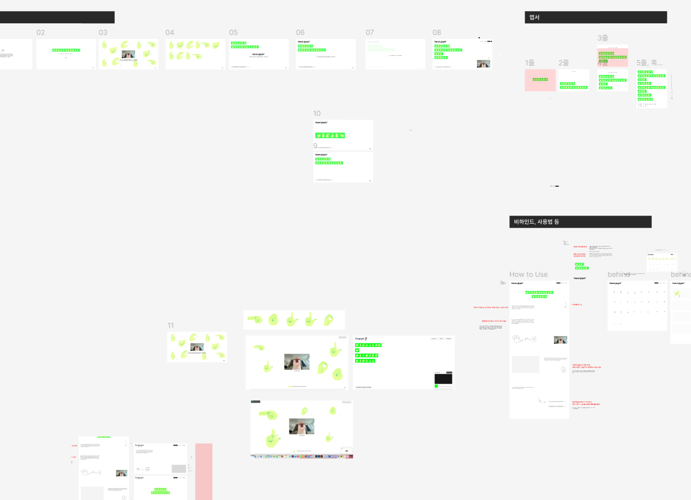
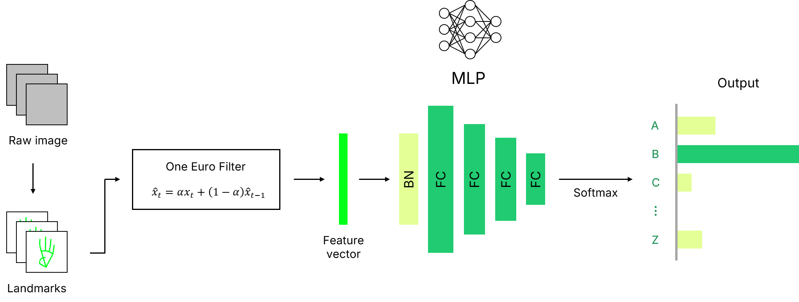
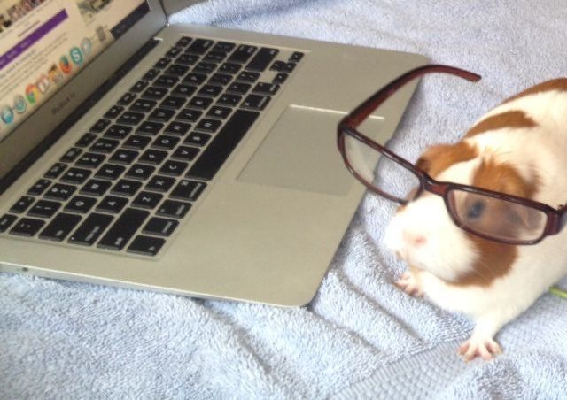
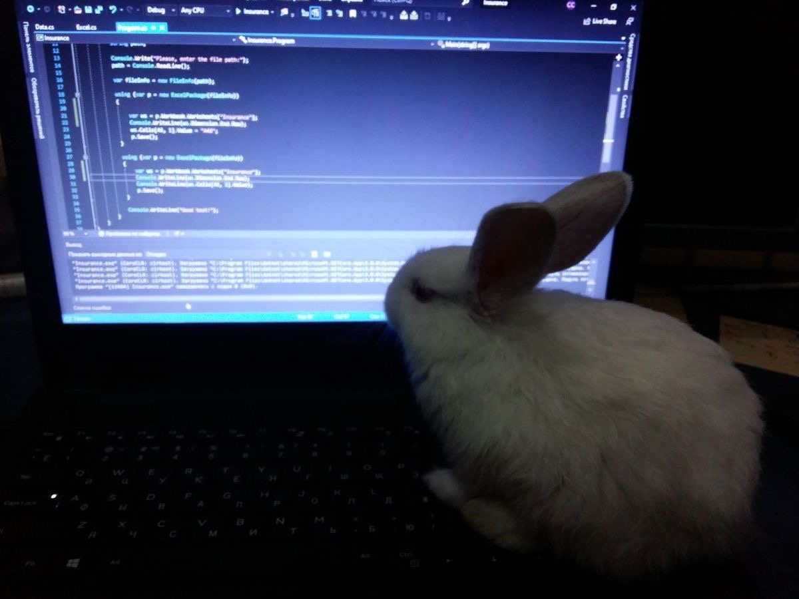

Design
번역이 아닌 기록으로서의 수어 Sign Language as Record, Not Translation
프로젝트의 시작은 디지털 세상이 언어를 다루는 방식에 대한 의문이었다. 우리는 매일 키보드를 두드려 텍스트를 입력하지만, 누군가에게는 손끝의 궤적이 가장 자연스러운 언어다. 문제는 지금까지의 디지털 환경이 농인의 언어를 그저 ‘일반 텍스트로 번역해야 할 대상’으로만 치부해 왔다는 점이었다. 수어를 다른 언어로 치환하는 과정에서, 그 언어가 가진 고유한 뉘앙스는 사라져 버린다. 그래서 우리는 손끝의 궤적과 몸짓의 호흡을 또 하나의 독자적인 언어로 바라보고, 이를 시각적으로 아카이빙하는 ‘타이포그래피 에디터’로 재정의했다.
The project began with a question about the way the digital world handles language. We type on keyboards every day to enter text, but for some people, the trajectory of their fingertips is the most natural form of language. The problem was that digital environments had long treated the language of Deaf people merely as something that needed to be translated into “ordinary text.” In the process of converting sign language into another language, the nuances unique to that language are lost. We therefore chose to view the trajectories of fingertips and the rhythm of gestures as an independent language in their own right, and redefined the project as a “typographic editor” that visually archives them.
진짜 고민은 수어 단어를 그래픽화하는 과정에서 시작됐다. 수어는 손모양(수형)뿐 아니라 어느 신체 부위(수위)에서 행해지는가에 따라 뜻이 완전히 달라진다. 미니멀한 무드를 위해 얼굴을 지우고 싶었지만, 코나 뺨을 쓰는 단어의 위치 맥락을 표현할 방법이 막막했다. 얼굴을 다 그리자니 캐릭터 일러스트처럼 조잡해지고, 다 빼자니 정보가 누락되는 지독한 딜레마였다.
The real challenge began when we tried to turn sign language words into graphics. The meaning of sign language depends not only on the handshape, but also on the location on the body where the sign is performed. We wanted to remove the face to maintain a minimal visual language, but it was difficult to communicate the spatial context of signs that use reference points such as the nose or cheek. Drawing the entire face made the graphics feel crude and overly illustrative, while removing it altogether meant losing essential information. It was an unavoidable dilemma.
초기 브레인스토밍 과정에서는 입력창 상단에 “이 단어는 코를 기준한 수어입니다” 같은 텍스트 가이드나 호버(Hover) 툴팁을 띄우자는 타협안도 나왔다. 잠시 숨통이 트이는 듯했으나 근본적인 균열을 마주했다. ‘텍스트 도움 없이 농인이 직관적으로 이해하는 순수 수어 폰트’가 프로젝트의 본질 아니었나? 이후 이 방향은 최종 기획에서 제외하고, 텍스트에 의존하지 않는 시각적 규칙을 만드는 방향으로 다시 고민을 이어갔다.
During the early brainstorming process, we considered compromises such as placing text guides above the input field—“This sign is referenced to the nose,” for example—or displaying Hover tooltips. The idea seemed to offer a temporary solution, but it exposed a more fundamental contradiction. Wasn’t the essence of the project to create a pure sign language font that Deaf people could understand intuitively, without relying on textual assistance? This direction was ultimately removed from the final concept, and we returned to the challenge of developing visual rules that did not depend on text.
얼굴을 직접 그리는 대신, 정사각형 박스 자체를 하나의 상반신 프레임으로 치환하는 ‘공간의 재해석’을 도입했다. 박스 내부에 보이지 않는 미세한 ‘상·중·하 3등분 그리드 시스템’을 구현해 상단은 안면부, 중앙은 가슴, 하단은 배 영역을 뜻하는 무언의 약속을 세웠다. 코나 가슴 등의 기준점이 꼭 필요한 단어에는 미니멀한 점이나 세로선 같은 추상적 기하학 심볼을 손 그래픽과 융합시켰다. 온보딩(인트로) 화면 역시 텍스트를 지우고, 상반신 픽토그램이 세 개의 박스 공간으로 치환되는 5초의 모션 그래픽을 배치해 진입 전 사용자가 공간의 규칙을 자연스럽게 학습하도록 설계했다.
Instead of drawing the face itself, we introduced a form of spatial reinterpretation in which the square container became a frame representing the upper body. An invisible three-part grid divided the box into upper, middle, and lower regions: the upper area represented the face, the middle represented the chest, and the lower represented the abdomen. This became an unspoken spatial convention. For signs that required specific reference points such as the nose or chest, minimal geometric symbols—such as dots or vertical lines—were integrated into the hand graphics. The onboarding intro also removed text entirely. Instead, a five-second motion graphic shows an upper-body pictogram transforming into three spatial boxes, allowing users to intuitively learn the spatial rules before entering the editor.
비수지 수어 비우기 Stripping Away Non-Manual Elements
‘안녕하세요’처럼 움직임, 위치, 방향에 따라 의미가 변하는 동적 수어 인식과 음성 언어와의 문법 차이는 기술적으로 구현 난이도가 높았다. 결국 오픈소스를 활용할 수 있는 ‘영어 알파벳 26자(지문자)’ 시스템으로 방향을 전환했다. 하지만 방향을 전환하면서 또 다른 딜레마를 마주했다.
Recognizing dynamic sign language expressions such as “hello,” whose meanings depend on movement, location, and direction, as well as accounting for grammatical differences between sign language and spoken language, proved technically difficult to implement. We eventually shifted toward a system based on the 26 letters of the English alphabet using fingerspelling, for which open-source resources were available. But this shift introduced another dilemma.
“수어의 껍데기를 빌린 영어 폰트 아닌가?”
“추상화된 손 모양 때문에 가독성이 전멸하지 않을까?”
“일회성 경험에 그치지 않을까?”
“Isn’t this simply an English font wearing the shell of sign language?”
“Wouldn’t the abstracted handshapes completely destroy legibility?”
“Wouldn’t the experience end after a single use?”
특히 지문자를 하나의 문자 시스템으로 바라보기 위해서는 수어의 모든 요소를 그대로 가져오는 것이 오히려 프로젝트의 방향을 흐릴 수 있다는 생각이 들었다.
In particular, we began to question whether preserving every element of sign language would actually blur the project’s direction if fingerspelling were to be treated as a typographic system of its own.
그렇다면 수어의 어떤 요소를 남기고, 어떤 요소를 비워내야 할까?
So which elements of sign language should remain, and which should be stripped away?
그 질문에서 출발해, 우리는 수어의 비수지 신호인 ‘표정’을 우선 비워내기로 했다. 수어에서 표정은 주요 문법 요소를 차지하지만, 본 프로젝트는 수어 교육 사전이 아닌 조형미를 정제하는 문자 에디터다. 한글 폰트를 설계할 때 말하는 이의 표정까지 담지 않듯, 말투(Tone)는 과감히 비우고 문자(Character) 자체의 조형성과 구조적 규칙에 집중했다.
Starting from this question, we first chose to remove facial expressions, one of the non-manual signals in sign language. Facial expressions play an important grammatical role in sign language, but this project is not an educational sign language dictionary. It is a typographic editor focused on refining visual aesthetics. Just as a Korean typeface does not attempt to encode the speaker’s facial expression, we deliberately stripped away Tone and focused instead on the visual form and structural rules of the Character itself.
하지만 수어가 시각·공간적 언어라는 점에서 얼굴과 몸의 움직임을 완전히 배제하는 것이 최종적인 방향은 아니었다. 오히려 이를 이후의 확장 가능성으로 남겨두었다. 감정을 표현할 수 있는 단어를 그래픽 스티커와 연결하고, 단어의 의미에 따라 감정 표현이 자동으로 매치되도록 하는 방식이다. 예를 들어 슬픔과 관련된 단어를 입력하면 슬픈 표정의 그래픽 스티커가 자동으로 부착되는 식으로, 문자 자체의 조형성을 유지하면서도 수어가 가진 표정과 감정의 요소를 시각적으로 확장할 예정이다. 현재는 지문자를 중심으로 조형적 완성도를 높이고, 키보드 입력을 병행해 접근성을 확장했다. 이를 통해 지문자에 대한 심리적 거리를 좁히고 자연스럽게 학습을 유도할 수 있도록 기획을 변경했다.
However, because sign language is a visual-spatial language, completely excluding facial and bodily movement was never intended to be the final direction. Instead, we left these elements open as possibilities for future expansion. One approach is to connect emotion-related words with graphic stickers and automatically match emotional expressions according to the meaning of the word. For example, entering a word associated with sadness could automatically attach a graphic sticker with a sad expression. In this way, the system could visually expand the expressive and emotional qualities of sign language while preserving the visual form of the characters themselves. For now, we focused on improving the formal refinement of fingerspelling and expanded accessibility by supporting keyboard input in parallel. This shift was intended to reduce the psychological distance users may feel toward fingerspelling and encourage natural learning through use.
인터랙티브 튜토리얼과 사용자 경험 Interactive Tutorial and User Experience
최종적으로 결정된 디자인을 사용자가 보다 편리하게 이해하고, 자연스럽게 학습할 수 있도록 에디터 진입 전 인터랙티브 튜토리얼을 추가했다. 게임 형태의 간단한 애니메이션을 통해 사용자는 별도의 설명을 읽지 않고도 그래픽의 공간과 움직임, 사용 방법을 직접 따라가며 익힐 수 있다.
To help users understand the final design more easily and learn it naturally, we added an interactive tutorial before entering the editor. Through a simple game-like animation, users can learn the spatial system, movement, and interaction method directly, without having to read separate instructions.
직관적인 움직임을 통해 자연스럽게 가이드를 학습하는 동시에, 수어 그래픽이 지닌 조형적 미감에도 흥미를 갖게 된다. 사용법을 설명하는 튜토리얼이 아니라, 에디터를 사용하기 전부터 수어의 그래픽 규칙을 경험하고 익숙해질 수 있도록 설계했다.
Through intuitive movement, users naturally learn the system’s visual guide while also becoming interested in the visual aesthetics of the sign language graphics. Rather than functioning as a conventional tutorial that simply explains how to use the interface, it was designed so that users could experience and become familiar with the graphic rules of sign language even before they begin using the editor.
완성된 그래픽은 엽서로 저장하고 공유할 수 있다. 수어 지문자로 새겨진 이니셜은 농인과 청인 사이를 잇는 고유한 암호이자 비밀 편지가 된다. 단순히 수어를 배우는 것을 넘어, 수어의 예술적 가치를 나누고 두 문화 사이의 심리적 거리를 좁히는 것이다. 특히 실제 제작과 테스트 과정에서 개발자와 디자이너 모두 자연스럽게 수어에 익숙해지는 경험을 했다. 처음에는 하나의 그래픽 시스템으로 바라보았던 손 모양과 움직임을 반복해서 사용하고 관찰하면서, 수어 자체에 대한 심리적 거리도 자연스럽게 줄어들었다.
The completed graphics can be saved and shared as postcards. Initials rendered in sign language fingerspelling become a unique code and a kind of secret letter connecting Deaf people and hearing people. The goal goes beyond simply learning sign language: it is about sharing its artistic value and reducing the psychological distance between the two cultures. During the actual production and testing process, both developers and designers found themselves becoming naturally more familiar with sign language. By repeatedly using and observing the handshapes and movements that had initially been treated only as components of a graphic system, their psychological distance from sign language itself also gradually decreased.
이처럼 최종 결과물을 엽서와 같은 친화적인 형태로 확장하고, 사용자가 직접 만들고 공유하는 경험을 통해 수어를 어렵게 배워야 하는 언어가 아닌 자연스럽게 접할 수 있는 시각적 언어로 경험하도록 하는 것. 이것이 이 프로젝트가 지향하는 마지막 형태다.
By extending the final output into an approachable format such as a postcard, and by allowing users to create and share their own compositions, the project aims to let people experience sign language not as a difficult language that must be formally learned, but as a visual language that can be encountered naturally. This is the final form the project ultimately seeks to achieve.

Development
수어의 자연스러운 움직임 Natural Movement in Sign Language

개발 과정에서 수어가 시각·공간적 언어라는 점이며, 손의 조형적 미와 손가락의 움직임을 강조하고자 하는 의도를 담았다. 사용자가 손을 움직여 수어를 입력하면 이에 따른 자연스러운 수어 그래픽 변화 애니메이션을 구현하고자 했다.
During development, we wanted to reflect the fact that sign language is a visual-spatial language, while emphasizing both the visual aesthetics of the hand and the movement of the fingers. When a user moves their hand to input sign language, the corresponding sign language graphic should transition with a natural animation.
'A'라는 문자와 'B'라는 문자 사이의 자연스러운 변화(morph)가 필요하다. 디자이너가 제공한 벡터 파일은 문자마다 개수와 점 분포가 다르다. 이들끼리 직접 보간하면 대응관계가 맞지 않기 때문에 전체 길이를 구한 후, 동일한 간격으로 256개의 점을 뽑는 방식을 택했다. 즉 하나의 수어를 점 256개의 집합으로 이루어진 닫힌 외곽선으로 볼 수 있다.
A natural morph between the letter “A” and the letter “B” was therefore necessary. The vector files provided by the designer differed in both the number and distribution of points for each letter. Directly interpolating between them would produce mismatched correspondences, so we first calculated the total contour length and then sampled 256 points at equal intervals. In other words, each sign language graphic can be represented as a closed contour consisting of 256 points.
닫힌 외곽선은 시작점이 임의적이다. 따라서 같은 손가락 위치라도 한 그래픽에서는 0번 점, 다른 그래픽에서는 80번 점일 수 있다. 대응점들 사이의 거리가 멀 경우 중간 단계 모양이 이상해진다. 이를 보정하기 위해 최소 평균제곱오차(MSE)를 사용했다. 모든 순환 이동량에 대해 오차값이 최소가 되는 값을 찾고 해당 값으로 시작점을 보정한다.
Because a closed contour has no fixed starting point, the same finger position might correspond to point 0 in one graphic and point 80 in another. If corresponding points are too far apart, the intermediate shapes become distorted. To correct this, we used mean squared error (MSE). We evaluated the error across every possible cyclic shift, selected the shift that minimized the error, and adjusted the starting point accordingly.

그래픽의 조형미 보존 Preserving the Visual Aesthetics of the Graphics
개발자는 디자이너가 전달한 벡터 파일의 형식에 관계 없이 모든 그래픽 사이의 변형이 가능해야 한다. 특히 벡터 파일마다 경로의 방향이 다를 수 있기 때문에 정방향 순서와 역방향 순서를 모두 검사한다. 이 과정이 없으면 손가락이 비정상적으로 뚫고 지나가는 현상이 일어날 수 있다.
The system needed to support morphing between any graphics regardless of the format of the vector files provided by the designer. In particular, because the path direction may differ from one vector file to another, both the forward and reversed point orders are evaluated. Without this step, fingers can pass unnaturally through one another during the transition.
또한 변형 과정에서 손의 조형미를 흐트려서는 안 된다. 중간 과정에서도 기존의 그래픽 스타일을 유지할 수 있는 보간법 및 게임에서 사용되는 애니메이션 기법을 사용했다.
The morphing process also needed to preserve the visual aesthetics of the hand. To maintain the original graphic style throughout the intermediate stages, we applied interpolation methods together with animation techniques commonly used in games.
변화 과정에서의 중간 점은 시작점과 목표점 사이의 선형 보간(lerp)으로 계산한다. 더 부드러운 애니메이션을 위해 선형 보간 값을 시간에 따른 3차 함수(smoothstep)로 계산했다. 초반과 끝부분의 속도가 0에 가까워지므로 형태가 갑자기 움직이거나 멈추는 느낌을 줄였다.
Intermediate points during the transition are calculated using linear interpolation (lerp) between the starting and target points. For smoother motion, the linear interpolation parameter is transformed using a cubic function over time, known as smoothstep. Because the velocity approaches zero at both the beginning and the end of the transition, the graphic avoids the impression of suddenly starting or stopping.
손톱이나 선 같은 세부 요소들도 있다. 이는 외곽선 변화와 별도로 앞부분에서 사라지고 뒷부분에서 나타나도록 처리했다. 손톱의 경우 가로 길이와 세로 길이를 비교하여 더 긴 축 방향으로 줄어들게 했고, 선의 경우 각 조각의 길이가 줄어들게 했다.
The graphics also contain smaller elements such as fingernails and lines. These are handled separately from the contour morph: they disappear during the earlier part of the transition and reappear toward the end. For fingernails, the horizontal and vertical dimensions are compared, and the shape contracts along its longer axis. For lines, the length of each segment is gradually reduced.
수어 인식 알고리즘 Sign Language Recognition Algorithm
프로젝트의 핵심인 사용자의 수어 인식은 오픈소스 프레임워크인 MediaPipe를 이용했다. 카메라를 통해 얻은 손 이미지에서 21개의 관절 좌표(랜드마크)를 검출한다. 0번 랜드마크인 손목을 원점으로 하고, 손의 최대 폭과 높이로 각 좌표를 나눠 정규화해 손의 위치에 관계 없이 형태만을 인식할 수 있게 했다. 인식한 관절의 좌표들은 필터링 이후 사전학습된 머신러닝 모델의 추론과정을 거쳐 수어가 가리키는 알파벳의 확률값을 출력하게 된다.
At the core of the project, user sign language recognition was implemented using the open-source MediaPipe framework. From the hand image captured by the camera, the system detects 21 joint coordinates, or landmarks. The wrist, landmark 0, is set as the origin, and each coordinate is normalized by the maximum width and height of the hand. This allows the system to recognize the handshape independently of where the hand appears in the camera frame. After filtering, the detected joint coordinates are passed through a pretrained machine learning model, which outputs a probability for each alphabet letter represented by the sign.
추론의 정확도를 높이기 위해 인식한 관절 랜드마크는 필터링 과정을 거친다. 먼저 고주파 잡음을 줄이기 위해 매 프레임에서 새 관측값과 이전 필터값을 가중합하는 지수이동평균(EMA) 필터를 적용했다. 하지만 손이 빠르게 움직일 때 지연이 일어난다는 점에서 한계가 있었다.
To improve inference accuracy, the detected joint landmarks undergo a filtering process. We first applied an exponential moving average (EMA) filter, which reduces high-frequency noise by computing a weighted combination of the new observation and the previous filtered value at every frame. However, this introduced noticeable latency when the hand moved quickly.
이를 보완하기 위해 One Euro Filter로 개선했다. 프레임 사이 위치 변화를 통해 현재 속도를 근사하고, 속도를 EMA로 부드럽게 만든다. 그 뒤 움직임이 빠를 수록 임계값을 높인다. 이렇게 하면 손이 빠르게 움직일 때 필터를 덜 강하게 적용해 지연을 줄일 수 있다. 손을 가만히 들고 있을 때는 흔들림을 강하게 제어하고, 수화를 바꾸기 위해 손을 움직일 때는 지연을 줄인다.
To address this limitation, we replaced it with a One Euro Filter. The current velocity is first approximated from positional changes between frames, and the velocity itself is smoothed using an EMA. The cutoff threshold is then increased as the movement becomes faster. As a result, the filter is applied less aggressively during rapid hand movements, reducing latency. When the hand remains still, jitter is strongly suppressed; when the user moves their hand to change the sign, the system prioritizes responsiveness.
머신러닝 파이프라인은 다음과 같다. 구조는 분류기(classifier)이며 모든 과정에서 파라미터들은 사전학습된 값을 사용했다. 먼저 각 점마다 x, y좌표를 읽어 총 42차원의 feature vector를 입력으로 가진다. MLP의 첫 layer에서 Batch Normalization을 통해 정규화를 거친다. 이후 42차원으로부터 4개의 FC layer를 거쳐 26차원의 logits를 내보낸다. 각 layer의 activation function은 Mish를 사용했다. 이후 출력된 logit에 softmax를 적용해 확률 분포로 변환한다. 가장 확률이 높은 클래스가 가리키는 알파벳이 된다.
The machine learning pipeline is structured as follows. The model is a classifier, and all parameters throughout the pipeline use pretrained values. For each landmark, the x- and y-coordinates are read to form a 42-dimensional feature vector. In the first layer of the MLP, the input is normalized using Batch Normalization. The 42-dimensional input is then passed through four fully connected (FC) layers to produce 26-dimensional logits. Mish is used as the activation function for each layer. Softmax is then applied to the output logits to convert them into a probability distribution. The alphabet letter corresponding to the class with the highest probability becomes the final prediction.

이외에도 사용자의 동작이 정확한 알파벳으로 대응될 수 있도록 다양한 기법들을 적용하였고, 의도치 않게 여러 글자가 입력되거나 다른 글자가 입력되는 현상을 방지해 매끄러운 사용자 경험을 전달한다.
In addition, we applied several techniques to ensure that user gestures are mapped to the intended alphabet letters as accurately as possible. These mechanisms help prevent unintended multiple inputs or incorrect characters from being entered, resulting in a smoother overall user experience.
Info

Design
